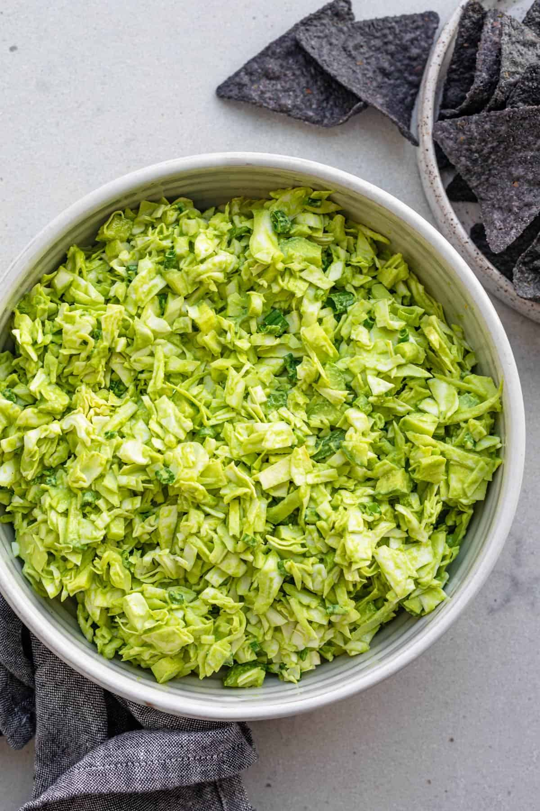

Green Goddess Salad

Elevate Your Greens with this Refreshing Flavor Burst
Unleash your chopping skills with a flavorful, vegan Green Goddess salad. Prepare to be captivated by the creamy, vibrant dressing that will undoubtedly become your new favorite recipe!
Ingredients
- 1/2 head of green cabbage
- 3 persian cucumbers
- 1 bundle of green onions
Dressing
- 1 cup baby spinach
- 2 garlic cloves
- 1 cup fresh basil
- 1 small shallot
- 1/4 cup cashews (or any other nuts)
- Juice of 2 lemons
- 1/4 cup olive oil
- 2 table spoons rice vinegar
- 1 teaspoon salt
Instructions
- Combine cabbage, cucumbers, and green onions in a bowl.
- Blend dressing ingredients for a creamy, vibrant green sauce.
- Toss vegetables with dressing.
- Enjoy!
Return to main page